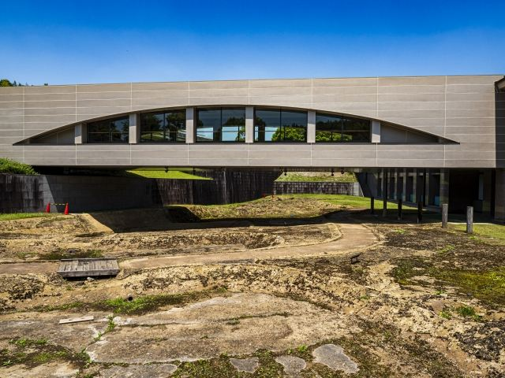
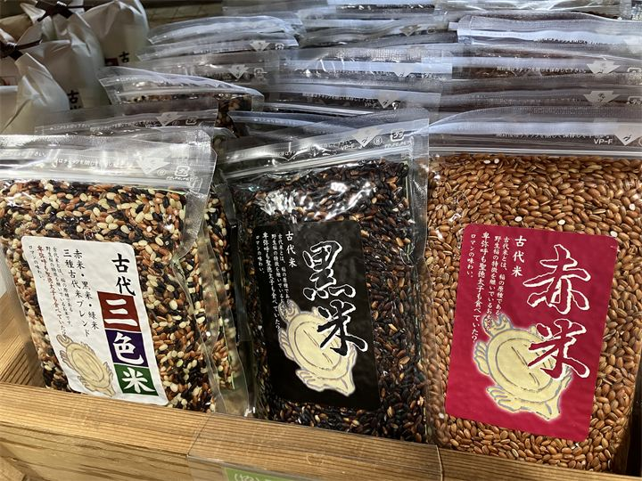
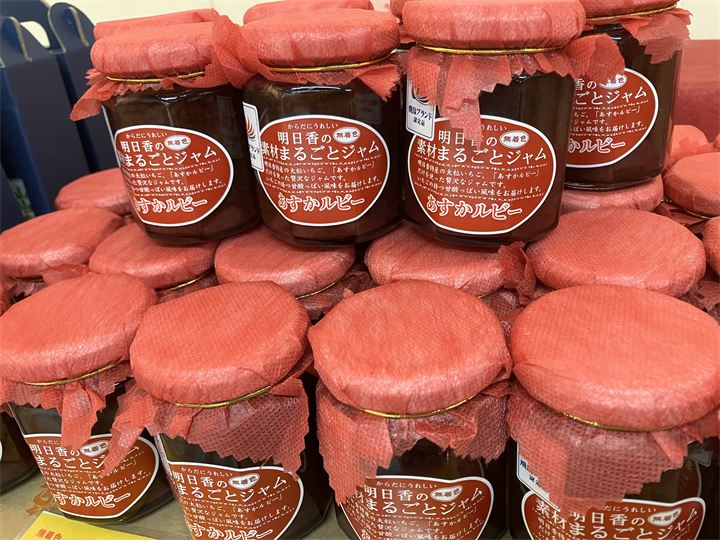
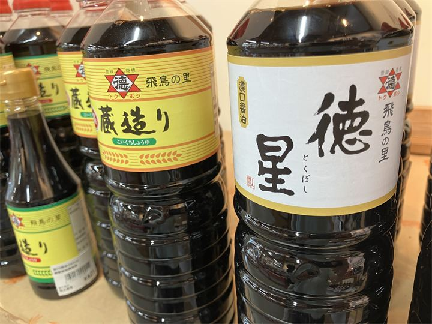

明日香村の観光スポット一覧
古墳・遺跡

石舞台古墳
飛鳥を代表する巨大古墳。歴史を感じる人気スポット。

高松塚古墳
極彩色壁画で世界的に知られる飛鳥時代の古墳です。

キトラ古墳
四神壁画と天文図が発見された特別史跡です。

牽牛子塚古墳
八角形墳として知られる終末期古墳です。

中尾山古墳
文武天皇陵の可能性があると考えられている古墳です。

岩屋山古墳
精巧な石室構造が残る大型古墳です。

天武・持統天皇陵
天武天皇・持統天皇陵とされる歴史ある古墳です。

マルコ山古墳
美しい石室を持つ終末期古墳として知られています。

亀石
用途や由来に多くの謎が残る石造物です。

猿石
個性的な表情が特徴の飛鳥を代表する石造物です。

鬼の俎・鬼の雪隠
古墳石室の一部とされる巨大な石造遺構です。

酒船石
用途が明らかになっていない飛鳥を代表する謎の石造遺構です。

亀形石造物
酒船石遺跡で発見された祭祀施設と考えられる石造物です。

入鹿の首塚
蘇我入鹿の伝説が残る歴史スポットです。

飛鳥宮跡
飛鳥時代の政治の中心となった宮殿跡です。

飛鳥水落遺跡
日本最古級の水時計跡として知られる遺跡です。

飛鳥池工房遺跡
日本最古の貨幣「富本銭」が出土した工房跡です。

川原寺跡
飛鳥四大寺の一つに数えられる寺院跡です。

大官大寺跡
飛鳥時代最大級の寺院として建立された史跡です。

檜隈寺跡（於美阿志神社）
渡来系氏族ゆかりとされる古代寺院跡です。
神社・寺院


自然・風景


博物館


おみやげ

あすか夢販売所
明日香村の特産品やおみやげが揃う観光拠点です。

あすか夢の楽市
地元の新鮮な農産物や特産品を販売する人気の直売所です。

明日香の夢市
明日香村ならではのおみやげや特産品を取り扱う販売施設です。

古代米
飛鳥時代に思いを馳せながら味わえる、明日香村を代表する特産品です。

素材まるごとあすかルビージャム
奈良県を代表するブランドいちごで作ったジャム、おみやげに人気です。

徳星醤油
地元で親しまれる伝統の味を受け継ぐ醤油です。